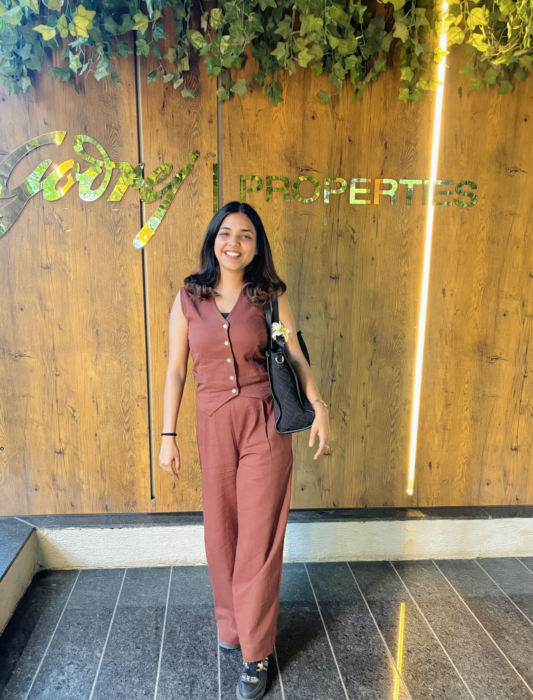

Clear communicator.
Thoughtful collaborator.
I enjoy bringing people together, listening for what’s getting in the way, and keeping a team moving toward the outcome.
A LITTLE MORE THAN A RÉSUMÉ
I’m curious about people: what they care about, what makes them feel understood, and what brings them back.
That curiosity has taken me from customer relationships at Godrej Properties to building a D2C venture, making content for my own audience, and shaping go-to-market ideas.

THE THREAD THROUGH IT ALL
I enjoy bringing people together, listening for what’s getting in the way, and keeping a team moving toward the outcome.
I love to travel and learn from the people, food, design and everyday rituals I encounter along the way.
My Instagram content has reached 80K+ organic views on one reel. I also hold RATNA, a postgraduate diploma in Bharatanatyam.